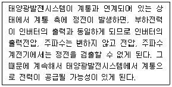
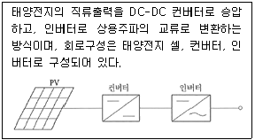
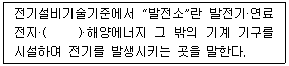

신재생에너지발전설비산업기사 (2015-05-31 기출문제)
1과목: 태양광 발전 시스템 이론
1. 다음 설명 중 틀린 것은?
- 옴의 법칙에서 전압은 저항에 반비례함을 의미한다.
- 온도의 상승에 따라 도체의 전기저항은 증가한다.
- 도선의 저항은 길이에 비례하고 단면적에 반비례한다.
- 전기가 누설되지 않도록 하는 것을 절연이라고 하며 그 재료를 절연물이라고 한다.
(정답률: 87%)

2. 태양광발전시스템 인버터의 기능이 아닌 것은?
- 자동운전정지
- 자동전압조정
- 직류검출
- 고조파검출
(정답률: 74%)
3. 실리콘 태양전지 모듈의 출력 특성에 대한 설명으로 틀린 것은?
- 태양광 모듈의 표면온도가 높아지면 출력이 약간 증가함
- 태양의 일사강도가 동일한 경우, 여름철에 비해 겨울철의 출력이 높음
- 단락전류는 일사강도에 비례하는 특성을 보임
- 모듈 온도가 높아지면 개방전압은 일반적으로 감소함
(정답률: 74%)
4. 풍력발전시스템 부품 중저속의 블레이드 회전수를 발전기용 고속회전수로 변환시키는 장치는?
- 감속기
- 로터
- 증속기
- 인버터
(정답률: 89%)
5. 태양광 모듈 내부의 전지를 기계적 충격, 온도 및 습도로부터 보호하고 전기적으로 절연시키기 위해 사용되는 캡슐화 재료가 아닌 것은?
- PVF(Poly-Vinyl Fluoride)
- EVA(Ethylene-Vinyl Acetate)
- PVB(Poly-Vinly Butyral)
- PO(Poly-Olefin)
(정답률: 61%)
6. 계통연계형 인버터의 기능에 해당하지 않는 것은?
- 자동운전 정지기능
- 자동전류 조정기능
- 단독운전 방지기능
- 최대출력 추종제어기능
(정답률: 78%)
7. 일사량과 어레이 경사각에 대한 설명으로 틀린 것은?
- 경사면 일사량은 어레이 경사각을 결정한다.
- 지표면 확산 일사는 태양으로부터 산란, 반사 후 지상에 도달하는 일사이다.
- 지표면 직달 일사는 태양으로부터 지상의 관측지점으로 직접 도달하는 일사이다.
- 태양전지는 많은 일사량을 받도록 지면과 수평면에 설치한다.
(정답률: 86%)
8. 태양광발전용 축전지가 갖추어야 할 요구조건이 아닌 것은?
- 자기 방전율이 높을 것
- 에너지 저장 밀도가 높을 것
- 중량 대비 효율이 높을 것
- 과충전, 과방전에 강할 것
(정답률: 86%)
9. 태양광발전설비에서 1스트링의 직렬 매수 산정식에 해당하는 것은? (단, 주변온도를 고려하지 않은 경우이다.)
- 인버터직류입력전압/모듈최대출력동작전압
- 인버터직류입력전류/모듈최대출력동작전압
- 인버터직류입력전압/모듈최대출력동작전류
- 인버터직류입력전류/모듈최대출력동작전류
(정답률: 76%)
10. 계통연계 보호장치 중 인버터 내부에 내장되지 않는 계전기는?
- 과전압 계전기
- 저전압 계전기
- 과주파수 계전기
- 지락 과전압 계전기
(정답률: 77%)
11. 다음에서 설명하고 있는 운전상태는?

- 자동운전
- 단독운전
- 병렬운전
- 추종운전
(정답률: 73%)
12. 태양전지의 직렬저항 증가에 의해 영향 받는 요소는?
- 개방전압 감소
- 누설전류 증가
- 단락전류 증가
- 충진율 감소
(정답률: 66%)
13. 다음 그림과 같이 설명되어지는 인버터 회로방식은?

- 상용주파 변압기 절연방식
- 고주파 변압기 절연방식
- 트랜스리스 방식
- 트랜스 방식
(정답률: 84%)
14. 각종 태양전지의 특징 중 장점이 아닌 것은?
- CIGS는 실리콘 재료에 영향을 받지 않고 색이 좋다.
- 염료감응형은 색을 선택할 수 있고 저렴하다.
- 단결성 실리콘은 변환효율이 높다.
- HIT는 변환효율이 낮다.
(정답률: 75%)
15. 바이오에너지의 범위에 대한 설명으로 틀린 것은?
- 동·식물의 유지를 변화시킨 바이오디젤
- 쓰레기매립장의 무기성폐기물을 변환시킨 매립지가스
- 생물유기체를 변환시킨 땔감·우드칩·펠렛 및 목탄 등의 고체연료
- 생명유기체를 변환시킨 바이오가스·바이오 에탄올·바이오 액화유 및 합성가스
(정답률: 82%)
16. 줄의 법칙을 이용한 발열량(cal) 계산식으로 옳은 것은? 단 I는 전류[A], R은 저항[Ω], t는 시간[sec]이다.)
- H=0.24I2R
- H=0.24I2Rt
- H=0.024I2Rt
- H=0.24I2R2
(정답률: 80%)
17. 온실효과에 대한 설명으로 틀린 것은?
- 온도효과 가스가 존재하지 않는다면 평균기온은 –18[℃]에 이른다.
- 석탄 등 화석연료 대량소비는 CO2발생 주원인이다.
- CO2 발생 증가는 지구온난화에 영향을 준다.
- 지구 온난화는 연간 강수량을 증가시킨다.
(정답률: 76%)
18. 단결정 태양전지의 제조공정 순서를 옳게 나열한 것은?
- 폴리실리콘→Czochralsik공정→웨이퍼 슬라이싱→반사방지막→전/후면 전극→인 도핑
- Czochralski공정→폴리실리콘→웨이퍼 슬라이싱→반사방지막→전/후면 전극→인 도핑
- 폴리실리콘→Czochralski공정→웨이퍼 슬라이싱→인 도핑→전/후면 전극→반사방지막
- 폴리실리콘→Czochralski공정→웨이퍼 슬라이싱→인 도핑→반사방지막→전/후면 전극
(정답률: 60%)
19. 종합출력에 영향을 미치는 손실 요소가 아닌 것은?
- 모듈의 온도
- 실측 경사면 일사량
- MPP 불일치
- 인버터 손실
(정답률: 55%)
20. 태양광발전시스템의 분전함(접속함)에 설치되는 구성요소가 아닌 것은?
- 직류출력 개폐기
- 누전 차단기
- 피뢰소자
- 역류방지 소자
(정답률: 60%)
2과목: 태양광 발전 시스템 시공
21. 지붕설치형 태양전지 모듈의 설치방법 중 유의할 사항으로 틀린 것은?
- 모듈 교환이 쉬울 것
- 지붕과 태양전지 모듈 간은 간격이 없도록 할 것
- 지지기구 등의 노출부를 가능한 줄일 것
- 적설량이 많은 곳에서는 적설하중을 고려할 것
(정답률: 85%)
22. 기초판과 기둥으로 형성되어 있으며, 기둥과 보로 구성되어 있는 건축물에 적용되는 기초의 종류는?
- 말뚝 기초
- 독립 기초
- 복합 기초
- 연속 기초
(정답률: 62%)
23. 태양광 발전설비 사용 전 검사에 필요한 서류가 아닌 것은?
- 공사 내역서
- 공사 계획신고서
- 감리원 배치 확인서
- 태양광 전지 규격서 및 성적서
(정답률: 53%)
24. 태양광 발전설비 시공기준 중 인버터에 관한 설명으로 옳은 것은?
- 옥내용을 옥외에 설치하는 경우는 10[kW] 이상이어야 한다.
- 모듈의 설치용량은 인버터의 설치용량의 1⑤[%] 이내이어야 한다.
- 각 직렬군의 태양전지 최대전압은 입력전압 범위 안에 있어야 한다.
- 인버터의 출력단 표시사항은 전압, 전류만 표시된다.
(정답률: 74%)
25. 태양전지모듈과 인버터, 인버터와 계통연계점 간의 전압강하는 각각 몇 [%]를 초과하지 않아야 하는가? (단, 전선 길이가 60[m] 이하일 경우)
- 3[%]
- 5[%]
- 7[%]
- 8[%]
(정답률: 76%)
26. 태양전지 모듈 조립 시 주의사항으로 적합하지 않은 것은?
- 태양전지 모듈의 파손방지를 위해 충격이 가지 않도록 한다.
- 태양전지 모듈의 인력 이동시 2인 1조로 한다.
- 태양전지 모듈과 가대의 접합 시 가스켓 등은 사용하지 않는다.
- 접속하지 않은 모듈의 리드선은 빗물 등 이물질이 유입되지 않도록 보호테이프로 감는다.
(정답률: 85%)
27. 태양광발전시스템 시공 시 필요한 대형장비에 해당하지 않는 것은?
- 굴삭기
- 콤프레샤
- 지케차
- 크레인
(정답률: 86%)
28. 전선을 지중 매설할 경우 중량물의 압력을 받을 위험이 있는 경우 매설 깊이는?(2021년 변경된 KEC 규정 적용)
- 0.6[m] 이상
- 1.0[m] 이상
- 1.2[m] 이상
- 1.5[m] 이상
(정답률: 76%)
29. 태양광 발전(3[kW] 이하)의 에너지 공급 인증서 가중치 중 건축물 등 기존 시설물을 이용할 경우 가중치는?
- 0.5
- 1.0
- 1.25
- 1.5
(정답률: 57%)
30. 공사감리 분기보고서는 다음 중 누가 작성하여 누구에게 제출하여야 하는가?
- 책임감리원이 작성하여 발주자에게 제출
- 책임감리원이 작성하여 감리업자에게 제출
- 공사업자가 작성하여 발주자에게 제출
- 공사업자가 작성하여 감리업자에게 제출
(정답률: 80%)
31. 전력계통의 무효전력을 조정하여 전압조정 및 전력손실의 경감을 도모하기 위한 설비는?
- 조상설비
- 보호계전장치
- 부하시 Tap 전활장치
- 계기용변성기
(정답률: 85%)
32. 태양전지 모듈 간의 배선시 단락전류에 충분히 견딜 수 있는 전선의 최소 굵기로 적당한 것은?
- 0.75[mm2]
- 2.5[mm2]
- 4.0[mm2]
- 6.0[mm2]
(정답률: 86%)
33. 제3종 및 특별 제3종 접지공사의 시설방법이 아닌 것은?
- 사람이 접촉할 우려가 있는 경우에는 금속관을 사용하여 방호할 수 있다.
- 접지하는 전기기계기구의 금속제 외함, 배관 등과 전기적으로나 기계적으로 확실히 시설되어야 한다.
- 접지저항값은 저압전로에 누전차단기 등의 지락차단장치(정격감도전류 30[mA], 0.5초 이내에 동작하는 것)를 설치하면 500[Ω]까지 완화할 수 있다.
- 접지선이 외상을 입을 염려가 있을 경우 접지할 기계기구에서 60[cm] 이내의 부분 및 지중부분을 제외하고 합성수지관 등에 넣어 보호하여야 한다.
(정답률: 67%)
34. 태양광 발전설비의 공사감리 법적 근거는?
- 전기사업법
- 전기설비기술기준
- 전력기술관리법
- 전기공사업법
(정답률: 57%)
35. 태양광발전설비 전기공사 중 옥외공사에 해당하지 않는 것은?
- 접속함 설치
- 전력량계 설치
- 분전반의 개조
- 태양전지 모듈 간의 배선
(정답률: 80%)
36. 방화구획 관통부의 처리에 관한 설명으로 틀린 것은?
- 전선배관의 관통부에서는 다른 설비로 불길이 번지거나 확대를 방지하는 것이다.
- 관통부의 충전재, 내열씰재이 전열에 의해 뒷면이 연소할 위험이 있는 온도가 되지 않아야 한다.
- 내열성이란 관통부의 충전재, 케이블, 배관재의 변형, 팍손, 탈락, 소실로 뒷면에 화염, 연기가 발생하지 않도록 하는 것이다.
- 내화구조물 배선, 배관 등으로 관통한 경우의 되메우기 충전재는 관통하기 전과 같거나 그 이상의 내화구조로 하지 않으면 안 된다.
(정답률: 68%)
37. 태양광 모듈 배선이 끝난 후 검사하는 항목이 아닌 것은?
- 극성확인
- 단락전류 측정
- 전압확인
- 일사량 측정
(정답률: 79%)
38. 주택지붕형 태양전지 모듈 어레이를 설치하기 위해 가장 중요하게 고려해야 하는 사항은?
- 냉각조건
- 음영
- 설치높이
- 설치각도
(정답률: 69%)
39. 책임감리원이 발주자에게 제출하는 최종감리보고서 중 공사추진 실적현황과 관련이 없는 것은?
- 하도급 현황
- 지시사항 처리
- 감리용역 개요
- 기성 및 준공검사 현황
(정답률: 52%)
40. 감리원은 공사가 시작된 경우에는 공사업자로부터 착공신고서를 제출받아 적정성 여부를 검토해야 한다. 그 서류가 아닌 것은?
- 품질관리계획서
- 안전관리계획서
- 공사도급 계약서 사본 및 산출 내역서
- 기술계산서
(정답률: 61%)
3과목: 태양광 발전 시스템 운영
41. 태양광발전은 큰 전류를 생성하는 소자달의 결합 구조물이다. 단결정 실리콘 태양전지의 경우 무려 8~9[A]까지 생성하는 특성이나 Voc(Open Circuit Voltage)는 0.6~0.65[V]밖에 안되어 출력은 4~5[W]로 측정이 된다. 일반적으로 ISC의 전류에는 영향을 미치나 VOC를 높일 수 있는 방법으로 가장 적절한 설명은?
- 작동 전류를 감소시킨다.
- 기판대비 불순물의 농도를 높게 주입하여 제조한다.
- 기판의 불순물 농도를 낮은 것으로 선택하여 제조한다.
- Voc를 높게 제조하기 위해서는 저온의 공정으로 진행한다.
(정답률: 60%)
42. 태양광 발전 시스템에 필요한 설비는 시험·인증을 받아야 한다. 시험·인증 절차로 옳은 것은?
- 인증신청→서류심사→성능심사→공장심사→인증서 발급
- 인증신청→성능심사→서류심사→공장심사→인증서 발급
- 인증신청→서류심사→공장심사→성능검사→인증서 발급
- 인증신청→공장심사→서류심사→성능심사→인증서 발급
(정답률: 68%)
43. 분산형 전원 발전설비는 전력계통 연계지점에서 발전기 용량 정격 최대전류의 몇 [%]이상인 직류전류를 전력계통으로 유입해서는 안 되는가?
- 2
- 1
- 0.5
- 0.3
(정답률: 56%)
44. 태양광발전에서 수명 감소의 가장 큰 원인 중 하나는 충전재(Encapsulant)의 특성변화에 기인 한다. 충전재 중 EVA(Ethylene Vinyl Acetate)의 설명으로 가장 부적절한 것은?
- 겔(Gel) 함량과 Curing 온도에 따라 가교율에 의해 강도가 달라진다.
- 가교율이 높으면 강도가 증가하고 미소 충격에 의해 태양전지의 균열로 이어질 수 있다.
- 빛과 수분을 동시에 일부 차단한다.
- 장기간 적외선에 노출되어 변색이 급격히 진행된다.
(정답률: 63%)
45. 독립형 태양광 발전시스템에서 부조일수의 설명으로 가장 옳은 것은?
- 정전된 일수를 말한다.
- 유지 보수를 위한 일수를 말한다.
- 연속적으로 발전이 가능한 일수를 말한다.
- 연속적으로 발전이 불가능한 일수를 말한다.
(정답률: 83%)
46. 태양광 발전시스템 저압배전선과의 계통연계 시 필요한 보호장치 중 발전설비의 고장을 보호하기 위한 보호장치는?
- 과전압보호계전기
- 과주파수계전기
- 부족주파수계전기
- 단락방향계전기
(정답률: 81%)
47. 태양전지 발전 원리로 가장 적절한 것은 무엇인가?
- 광전효과(Photovoltaic Effect)
- 제만효과(Zeeman Efect)
- 슈타르크효과(Stark Efect)
- 1차 전기광효과(Pockels Efect)
(정답률: 88%)
48. 태양광 발전 시스템의 단락전류측정 시 가장 낮게 측정되는 경우는 다음 중 어느 것인가?
- 한 여름 낮(태양전지 어레이 표면 온도 70[℃])
- 한 여름 아침(태양전지 어레이 표면 온도 20[℃])
- 한 겨울 낮(태양전지 어레이 표면 온도 40[℃])
- 한 겨울 아침(태양전지 어레이 표면 온도 –10[℃])
(정답률: 73%)
49. 태양광발전 시스템에서 고장 빈도가 가장 높고 출력에 영향을 미치는 기기는?
- 인버터
- PV어레이
- 퓨즈
- 차단기
(정답률: 84%)
50. 태양광발전(PV) 모듈 안전 조건 시험요건에 해당하지 않는 것은?(오류 신고가 접수된 문제입니다. 반드시 정답과 해설을 확인하시기 바랍니다.)
- 전기 충격 위험 시험
- 화재 위험 시험
- 역전압 과부하 시험
- 기계적 응력 시험
(정답률: 33%)
51. 태양광 발전설비의 전력 케이블로 적당하지 않은 것은?
- FR-CV
- UV케이블
- EM케이블
- FR-CVVS
(정답률: 61%)
52. 모듈의 온도에 따른 I-V 특성곡선에서 태양전지 특징을 설명한 것 중 옳은 것은?
- 태양전지 전압은 온도에 반비례한다.
- 태양전지 온도가 올라가면 발전량이 증가한다.
- 태양전지 전압은 온도에 비례한다.
- 태양전지 온도와 발전량은 상관관계가 없다.
(정답률: 68%)
53. 태양광 시스템이 설치가 되면 사용 전에 허가를 받아야 한다. 이때 받아야 하는 검사는 무엇인가?
- 정기 검사
- 일상 점검
- 사용전 검사
- 특별 검사
(정답률: 87%)
54. 현재 상업화되어있는 태양전지 중 가장 높은 온도계수 특성을 지니고 있어 출력의 감소가 가장 큰 태양전지는?
- 단결정실리콘태양전지
- 다결정실리콘태양전지
- 박막실리콘태양전지
- CIGS태양전지
(정답률: 63%)
55. 분산형 전원 발전설비는 고장에 의한 단독운전 상태가 발생했을 경우 몇 초 이내에 전력계통으로부터 분리시켜야 하는가?
- 0.5
- 0.3
- 0.1
- 1.0
(정답률: 71%)
56. 태양광 발전설비 운영자 숙지사항 중 옳은 것은?
- 계통연계형의 경우 한전전원이 OFF일 때 인버터가 자동정지하고 한전이 복전되었을 때 즉시 재기동한다.
- 접속함 차단기를 차단하면 전압이 유기되지 않으므로 감전에 주의할 필요가 없다.
- 계통연계형의 경우 한전전원이 OFF일 때 역송전 불가하다.
- 먼지나 이물질이 태양전지에 부착된 경우 전력생산의 저하 및 수명에 영향을 미치지 않는다.
(정답률: 69%)
57. 태양전지 모듈-접지선 간 절연저항을 직류전압 500[V]로 측정 시의 절연저항치[MΩ]는 얼마 이상이어야 하는가?
- 0.1
- 0.2
- 0.4
- 1.0
(정답률: 52%)
58. 태양광발전시스템의 용량이 100[kW]미만인 경우의 정기점검은?(오류 신고가 접수된 문제입니다. 반드시 정답과 해설을 확인하시기 바랍니다.)
- 매월 1회 이상
- 매월 2회 이상
- 매년 3회 이상
- 매년 2회 이상
(정답률: 43%)
59. 절연내압측정 시 최대사용전압의 몇 배의 직류전압을 인가하는가? (단, 표준태양전지어레이 개방전압을 최대사용전압으로 보는 경우)
- 1
- 1.5
- 2
- 3
(정답률: 75%)
60. 독립형 태양광발전시스템의 구성요소가 아닌 것은?
- 태양전지 어레이
- 인버터
- 계통연계기
- 축전지
(정답률: 71%)
4과목: 신재생 에너지 관련 법규
61. 저탄소 녹색성장 기본법에서 정한 저탄소 녹색성장 추진이 기본원칙이라 할 수 없는 것은?
- 정부는 저탄소 녹색성장의 시급성과 긴박성을 인식하고 정부주도로 저탄소 녹색성장을 최우선적으로 추진한다.
- 정부는 녹색기술과 녹색산업을 경제성장의 핵심동력으로 삼고 새로운 일자리를 창출·확대할 수 있는 새로운 경제체제를 구축한다.
- 정부는 국가의 자원을 효율적으로 사용하기 위하여 성장잠재력과 경쟁력이 높은 녹색기술 및 녹색산업 분야에 대한 중점투자 및 지원을 강화한다.
- 정부는 사회·경제활동에서 에너지와 자원 이용의 효율성을 높이고 자원순환을 촉진한다.
(정답률: 74%)
62. 전기공사업의 등록기준으로 틀린 것은?
- 전기공사기술자 3명 이상
- 자본금의 25[%] 이상의 현금 예치 또는 출자 증명
- 자본금 1억원 이상
- 공부상 면적이 25제곱미터 이상인 사무실 확보
(정답률: 77%)
63. 시간대별로 전력거래량을 측정할 수 있는 전력랑게를 설치·관리하여야하는 자가 아닌 것은?
- 발전사업자
- 송전사업자
- 구역전기사업자
- 자가용전기설비를 설치한 자
(정답률: 51%)
64. 태양전지 모듈 등의 시설시 옥측 또는 옥외에 시설하는 공사법이 아닌 것은?
- 합성수지관 공사
- 애자사용 공사
- 금속관 공사
- 가요전선관 공사
(정답률: 58%)
65. 태양전지 발전소에 시설하는 태양전지 모듈 및 전선 기타 기구 등의 시설방법으로 틀린 것은?(오류 신고가 접수된 문제입니다. 반드시 정답과 해설을 확인하시기 바랍니다.)
- 전선은 공칭 단면적[mm2] 이상의 연동선 또는 이와 동등 이상의 세기 및 굵기의 것일 것
- 태양전지 모듈을 병렬로 접속하는 전로에는 과전류차단기를 시설할 것
- 충전부분은 노출되지 않도록 시설할 것
- 태양전지 모듈의 지지물은 자중, 적재하중, 적설 또는 풍압의 진동과 충격에 대하여 안전한 구조의 것일 것
(정답률: 64%)
66. 특고압 가공전선로에서 발생하는 극저주파 전자계는 지표상 1[m]에서 전계강도 몇 [kV/m]가 되도록 시설하여야 하는가?
- 3.5
- 4.5
- 5.5
- 6.5
(정답률: 57%)
67. 400[V] 미만의 전로에 시설하는 기계기구의 철대 또는 외함에 시설하는 접지의 종류는?
- 제1종 접지공사
- 제2종 접지공사
- 제3종 접지공사
- 특별 제3종 접지공사
(정답률: 85%)
68. 신·재생에너지 기술개발 및 이용·보급 사업비의 사용처가 아닌 것은?
- 신·재생에너지 분야 기술지도 및 교육·홍보
- 신·재생에너지를 생산하는 사업자에 대한 지원
- 신·재생에너지 기술의 국제표준화 지원
- 신·재생에너지 관련 국제협력
(정답률: 57%)
69. 고압 또는 특고압의 기계기구 모선 등을 옥외에 시설하는 발전소, 개폐소 또는 이에 준하는 곳에 시설하는 울타리·담 등에 대한 판단기준으로 적합하지 않는 것은?
- 출입구에는 출입금지의 표시를 할 것
- 출입구에는 자물쇠장치 기타 적당한 장치를 할 것
- 울타리·담 등의 높이는 1.8[m] 이상으로 할 것
- 지표면과 울타리·담 등의 하단 사이즈 간격은 15[cm] 이하로 할 것
(정답률: 72%)
70. ( ) 안에 들어갈 가장 적당한 용어는?

- 태양광
- 태양전지
- 태양열
- 집광판(集光板)
(정답률: 74%)
71. 발전기, 전동기 등 회전기의 절연 내력은 규정된 시험전압을 권선과 대지 사이에 계속하여 몇 분간 가하여 견디어야 하는가?
- 5분
- 10분
- 15분
- 20분
(정답률: 83%)
72. 저탄소 녹색성장대책을 수립·시행할 때 지역적 특성과 여건을 고려하여야 하는 기관은?
- 대기업
- 국민
- 국가
- 지방자치단체
(정답률: 82%)
73. 국유재산 또는 공유재산을 임차하거나 취득한 자가 해당 재산에서 신·재생에너지 기술 개발 및 이용·보급에 관한 사업을 취득일로부터 얼마의 기간 이내에 시행하지 아니하는 경우 대부계약 또는 사용허가를 취소하거나 환매할 수 있는가?
- 3개월
- 6개월
- 1년
- 2년
(정답률: 48%)
74. 태양의 빛에너지를 변환시켜 전기를 생산하거나 채광(採光)에 이용하는 설비는?
- 태양열 설비
- 지열 설비
- 풍력 설비
- 태양광 설비
(정답률: 85%)
75. 전기설비의 제2차 접근상태는 가공 전선이 다른 시설물과 접근하는 경우 그 가공 전선이 다른 시설물의 위쪽 또는 옆쪽에서 수평 거리로 몇 [m] 미만인 곳에 시설되는 상태를 말하는가?
- 0.5
- 1
- 2
- 3
(정답률: 36%)
76. 신재생에너지 공급의무자에 해당하지 않는 것은?
- 한국수자원공사
- 한국석유공사
- 한국지역난방공사
- 50만[kW] 이상의 발전설비(신재생에너지 설비는 제외한다)를 보유하는 자
(정답률: 80%)
77. 중성점 직접접짓기 전로에 접속하는 것으로 성형 결선으로 된 변압기의 최대 사용전압이 345[kV]라 하면 이 변압기의 시험전압[V]은 얼마가 되는가?
- 220,800
- 248,400
- 379,500
- 431,250
(정답률: 46%)
78. 신·재생에너지의 기술개발 및 이용·보급 촉진을 위한 기본계획의 계획기간은?
- 3년 이상
- 5년 이상
- 10년 이상
- 20년 이상
(정답률: 80%)
79. 전기설비의 종류에 해당되지 않는 것은?
- 전기사업용 전기설비
- 일반용 전기설비
- 특수용 전기설비
- 자가용 전기설비
(정답률: 67%)
80. 발전소를 건설하는 공사에서 철근콘크리트 또는 철골구조부를 제외한 발전설비공사의 하자 담보 책임기간은 몇 년인가?
- 1년
- 3년
- 5년
- 7년
(정답률: 67%)
옴의 법칙에서 전압은 저항에 반비례함을 의미하는 이유는 전류가 일정하다는 가정 하에 전압과 저항은 반비례 관계에 있기 때문이다. 즉, 저항이 크면 전압이 작아지고, 저항이 작으면 전압이 커진다. 이는 전류가 일정하다는 가정 하에 유도되는 법칙이다.
도선의 저항은 길이에 비례하고 단면적에 반비례한다. 이는 도선의 저항을 결정하는 공식인 R = ρL/A에서 유도된 결과이다.
전기가 누설되지 않도록 하는 것을 절연이라고 하며 그 재료를 절연물이라고 한다. 이는 전기 회로에서 전기가 원치 않는 방향으로 흐르지 않도록 하기 위해 사용되는 기술이다.